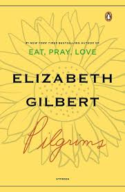
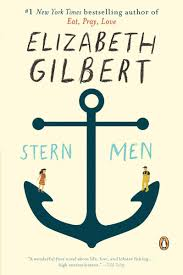

Elizabeth is best known for her 2006 memoir EAT PRAY LOVE, which chronicled her journey alone around the world, looking for solace after a difficult divorce. The book was an international bestseller, translated into over thirty languages, with over 10 million copies sold worldwide. In 2010, EAT PRAY LOVE was made into a film starring Julia Roberts. The book became so popular that Time Magazine named Elizabeth as one of the 100 most influential people in the world.
In 2010, Elizabeth published a follow-up to EAT PRAY LOVE called COMMITTED—a memoir which explored her ambivalent feelings about the institution of marriage. The book immediately became a Number One New York Times Bestseller, and was also received with warm critical praise. As Newsweek wrote, COMMITTED “retains plenty of Gilbert’s comic ruefulness and wide-eyed wonder”, and NPR called the book “a rich brew of newfound insight and wisdom.”
Her latest novel, THE SIGNATURE OF ALL THINGS, published in Autumn 2013, is a sprawling tale of 19th century botanical exploration. O Magazine named it “the novel of a lifetime”, and the Wall Street Journal called it “the most ambitious and purely-imagined work of (Gilbert’s) twenty-year career.” Elle Magazine said, “Looks like Gilbert keeps raising on the bar.”
THE SIGNATURE OF ALL THINGS was a New York Times Bestseller, and Janet Maslin called it “engrossing…vibrant and hot-blooded.” The novel was named a Best Book of 2013 by The New York Times, O Magazine, The Washington Post, The Chicago Tribune, and The New Yorker.”
Her Books



